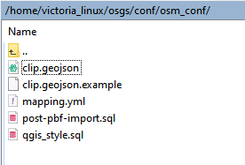
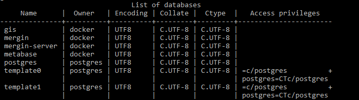
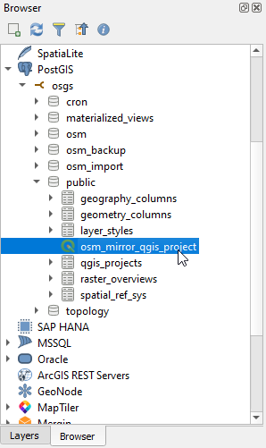
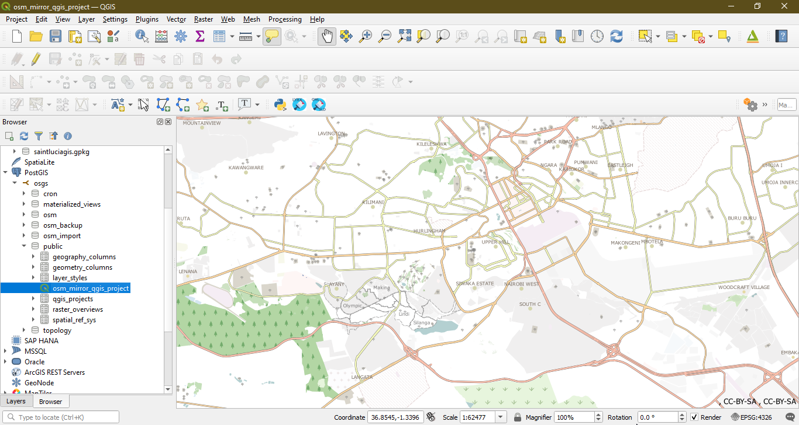
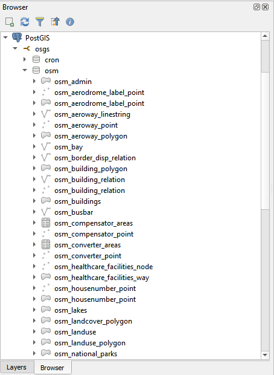

Creating an Open Street Map mirror into your database¶
The OSM mirror service uses the kartoza/docker-osm tool to create an in-database mirror of a designated geographical area in the designated postgres database schema (set to: osm). The OSM mirror tool is described in the project README here:
Preparing the Country PBF file and the clip area document¶
The PBF files for the country or region of interest can be downloaded from GeoFabrik. The PBF file used in this workflow was for Kenya and the URL for the country PBF file is https://download.geofabrik.de/africa/kenya-latest.osm.pbf.
The clip area constrains any data being imported into the PostGIS database to a specific geographic area. You will need to save the clip area document as conf/osm_conf/clip.geojson. For best performance, a simple rectangle is best, but any complex polygon can be used. The clip.geojson can also be the same extent of the administrative area for your country or region specified in the PBF file, or it can be a smaller extent. The CRS of the geojson should always be EPSG:4326. 1

You can easily create such a clip document at https://geojson.io or by using QGIS. For this workflow the clip area document for the country Kenya, was obtained using QGIS. The Kenya country boundary data was obtained from the Kenya- Subnational Administrative Boundaries data.
Editing the mappings.yml file.¶
For advanced users, you can tweak the conf/osm_conf/mapping.yml file to customize the OSM data being imported into the PostGIS database.
You can see how the imposm3 mapping syntax works here
Note: Any alterations to theconf/osm_conf/mappings.ymlfile while the OSM mirror service is running will not change the current OSM data in the database. To effect these changes, you will need to clear the imported OSM data in the database (and stopping the OSM mirror service), usingmake stop-osm-mirrorand deploying the OSM mirror service, usingmake deploy-osm-mirror.
Deploying the OSM mirror service¶
Deploy the initial stack¶
In your server terminal, deploy the initial stack by running either make configure-ssl-self-signed or make configure-letsencrypt-ssl. The initial stack consists of the Nginx, Hugo Watcher and Watchtower services.
Use make configure-ssl-self-signed if you are going to use a self-signed certificate on a localhost for testing. Use make configure-letsencrypt-ssl if you are going to use a Let’s Encrypt signed certificate on a name host for production. The make configure-ssl-self-signed will deploy the Nginx, Hugo Watcher and Watchtower services, but after running make configure-letsencrypt-ssl you will need to run make deploy-hugo to deploy the Nginx, Hugo Watcher and Watchtower services.
Use make ps to view the services running. The following services should be up:

Deploy the PostgreSQL and PostGIS service¶
Deploy the PostgreSQL and PostGIS service using make deploy-postgres. If you already have PostgreSQL installed on your local machine, ensure that you specify a different port number for the Postgis Public Port other than port 5432, the default port for PostgreSQL. For example, you can use the port number 5434.

Use make ps to view the services running. The following services should be up:

The PostgreSQL and PostGIS service has the following databases:

In this workflow, you will be connecting to the gis database.
Deploy the OSM mirror service¶
Deploy the OSM mirror service using make deploy-osm-mirror and follow the subsequent prompts. Use make ps to view the services running. The following services should be up:

You can view the logs for the OSM mirror service using the command make osm-mirror-logs.
Editing your local connection service file¶
On your local machine (where you have QGIS Desktop installed), the per-user connection service file can be at ~/.pg_service.conf or the location specified by the environment variable PGSERVICEFILE. Add a service to this connection service file with the following service name and connection parameters.
[osgs]
dbname=gis
user=docker
port=<POSTGRES_PUBLIC_PORT>
password=<POSTGRES_PASSWORD>
host=
sslmode=require
For the port and password connection parameters, use the POSTGRES_PUBLIC_PORT and POSTGRES_PASSWORD specified in the .env file. For the host connection parameter, use the hostname of the server where you have set up OSGS.
For more information on the PostgreSQL connection service file see the PostgreSQL documentation.
Setting up your PostGIS connection in QGIS¶
QGIS Desktop can be downloaded from here and installed using these instructions.
On your local machine, open QGIS Desktop. In your Browser Panel, right click on the PostGIS option and click on “New Connection”. This will open the Create a New PostGIS Connection dialogue.

In the Connection Information section, give the connection an appropriate name. For the service, enter the service name that you specified in the connection service file. Set the SSL mode to require and ensure you have enabled the Also list tables with no geometry and the Allow saving/loading QGIS projects in database options. Once all the configuration options have been set, click on “Test Connection”. Once you see the Connection to <Name> was successful message, click “OK”. You have now successfully connected to the PostgreSQL and PostGIS service gis database.

Loading the default OSM mirror QGIS project¶
To load the default OSM mirror QGIS project, in the qgis_projects table, in the public schema, double click on the osm_mirror_qgis_project. The project layers will load onto the QGIS Map View.


Loading the OSM Mirror Layers into QGIS¶
The imported Open Street Map layers for the clip area specified are present in the osm schema of the database.

To load a layer from the osm schema onto the QGIS Map View, double click on the table or drag and drop the table onto the Map View.

Saving a QGIS project into the PostGIS database¶
In the Menu Toolbar click on Project. From the drop down menu select Save To PostgreSQL.

Save the project in the public schema and name the project. In this example we have named the project qgis_projects.

Backing up and restoring a QGIS project into the database¶
To back up the QGIS project created in the previous section, run the command make backup-db-qgis-project. This backs up the qgis_projects table in the public schema as a .sql file named qgis-projects.sql in the /backups/ folder. The backup-db-qgis-project target also creates a copy of the qgis-projects.sql file with the date the backup was made in the file name e.g. qgis-projects-2022-02-08.sql
To restore the last back up of the QGIS projects in the qgis_projects table, run the command make restore-db-qgis-project. To restore an older backup, first copy it to /backups/qgis-projects.sql then run the command make restore-db-qgis-project.
Saving QGIS layer styles into the database¶
To save the style of a layer into the database, right click on the layer in the Layers Panel and select Properties.

In the Symbology section of the Layer Properties, click on Style > Save style.

In the Save Layer Style dialogue select In Database (postgres) and name the style file. You can add an optional description of the style and also set the style to be the default style for the layer.

The saved style is added as an entry in the layer_styles table in the public schema of the PostGIS OSM database.

Backing up and restoring the QGIS styles into the database¶
To back up the QGIS styles created in the previous section, run the command make backup-db-qgis-styles. This backs up the layer_styles table in the public schema as a .sql file named qgis-styles.sql in the /backups/ folder. The backup-db-qgis-styles target also creates a copy of the qgis-styles.sql file with the date the backup was made in the file name e.g. qgis-styles-2022-02-08.sql
To restore the last back up of the layer_styles table, run the command make restore-db-qgis-styles. To restore an older backup, first copy it to /backups/qgis-styles.sql then run the command restore-db-qgis-styles.
Publishing with GeoServer¶
To publish the OSM mirror layers in the osm schema using GeoServer, use the Publishing layers using Geoserver workflow.
Publishing with QGIS Server¶
To publish the OSM mirror layers in the osm schema using QGIS Server or to publish a QGIS project that references the OSM mirror layers in the osm schema, use the Publishing a QGIS project using a connection service file workflow.